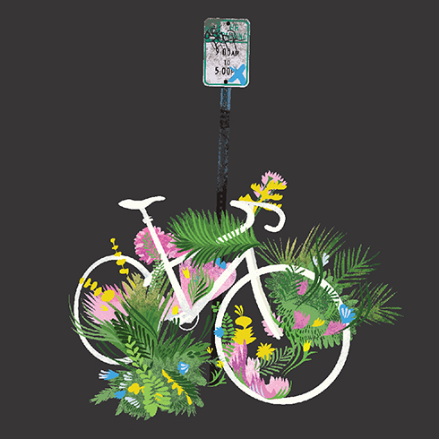
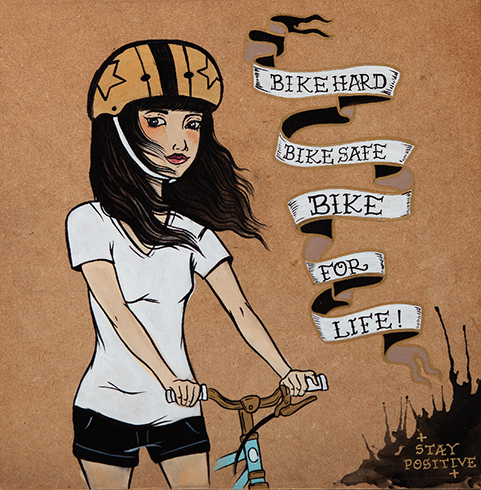

One H.E.L.L. of a Compilation
In 2007, Gordon Riker & Kelly Wallace both tragically passed away in bike accidents in Boston, MA. Shortly after, friends of their's started a non-profit organization titled H.E.L.L. (Helping Everyone Live Longer). H.E.L.L. is a DIY group that primarily operates in Boston's punk and hardcore scene that both Gordon and Kelly were heavily involved in. H.E.L.L.'s main goal is to give out free helmets from donations while raising bike safety awareness.This music compilation was curated and released by Get Stoked! Records, out of Burlington, Vermont. It features songs and artwork from Gordon and Kelly's friends, family, and favorite bands, as well as a few others who have lost someone close to them. Contributions were not just primarily from the Greater Boston area, but also Florida, New Hampshire, Rhode Island, New York, Vermont, Pennsylvania, and many other places. The compilation and benefit was supported by people from around the world with all proceeds going directly to keeping H.E.L.L. alive.

Illustration by Brian Butler
Spatial distribution of contributing musicians

Illustration by Leigh Zoto
Spatial distribution of orders which benefited H.E.L.L.